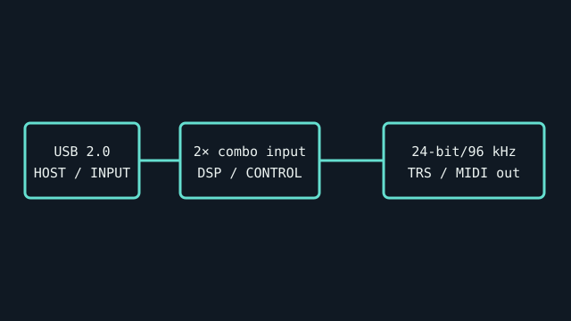

[ INDIVIDUAL COMPONENT // SOUND HARDWARE ]
PreSonus AudioBox USB 96
Bus-powered USB recording interface with two front-panel combo inputs, analog monitoring controls, and MIDI I/O. The model name denotes its 96-kHz class, not 192-kHz operation.

IDENTIFICATION: Match the complete printed model, revision, bundled breakout, and accessory markings. Specs below describe this named model; family-level variants are not assumed interchangeable.
Specifications
| Catalog subcategory | USB audio interfaces |
|---|---|
| Product ID | PreSonus AudioBox USB 96 |
| Bus / host | USB 2.0 bus-powered interface. |
| Connectors and I/O | Two front-panel XLR/TRS mic/instrument combo inputs, two balanced 1/4-inch TRS outputs, stereo headphone output, MIDI DIN input/output, and mix control for direct monitoring. |
| Chipset / conversion / protocol | 24-bit / up to 96 kHz; 2-in/2-out analog interface. The product page does not disclose converter IC model. |
| Drivers / operating systems | PreSonus describes USB Audio Class-compliant operation without special drivers, current compatibility with Apple Silicon, iOS/iPadOS, and virtually all macOS/Windows versions subject to current system requirements. Confirm host requirements for the exact use case. |
| Variant compatibility | AudioBox USB 96 is distinct from AudioBox iTwo, Studio 24c, and original AudioBox USB. Check the USB 96 label and avoid assigning USB-C or higher-rate specifications from other PreSonus models. |
Service & preservation
Preserve the supplied USB cable, MIDI notes, and product serial. Inspect the steel enclosure, combo jacks, headphone pot, and USB socket. Verify direct-monitor mix before diagnosing latency as a driver defect.
Identification and compatibility checks
- Photograph the product/model label, board silkscreen/revision, connector faces, cable assemblies, and accessory part numbers before installation.
- Check electrical bus and host slot or USB/MIDI protocol support against the exact manual; connector shape alone does not establish compatibility.
- For analog I/O, confirm line/mic/instrument level, phantom-power behavior, channel map, and direction from the model-specific documentation before connecting equipment.
- When software or driver support is uncertain, preserve the last known-good installer and document tested host OS, driver version, and device identifier.
Primary manufacturer & standards sources
- PreSonus AudioBox USB 96 product specificationsManufacturer confirms combo inputs, balanced outputs, MIDI I/O, bus power and class-compliant use.
- PreSonus AudioBox USB 96 Quick Start GuideManufacturer guide for I/O and installation.
- PreSonus USB audio system requirementsManufacturer host OS and system requirements; confirm current version.
Source selection is model-specific where an original manual or vendor product/support page exists. Archived scans preserve manufacturer documentation; operating-system claims are limited to what the cited product/manual materials identify.